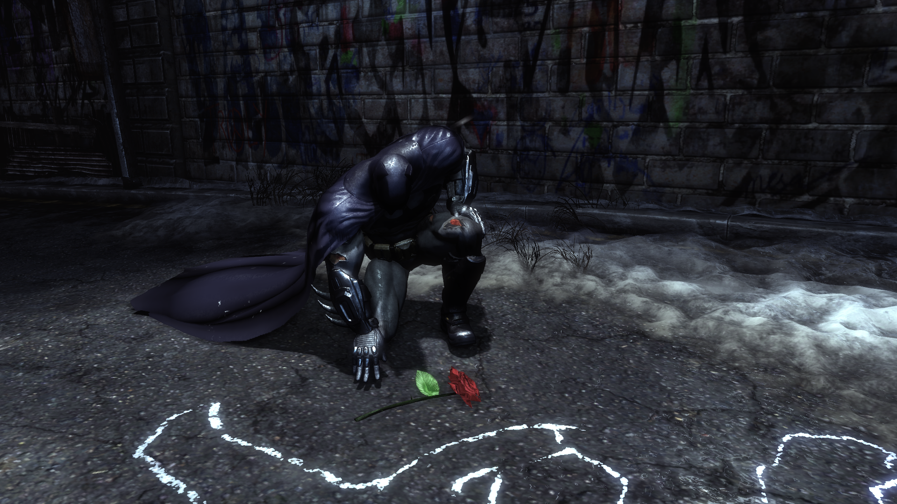
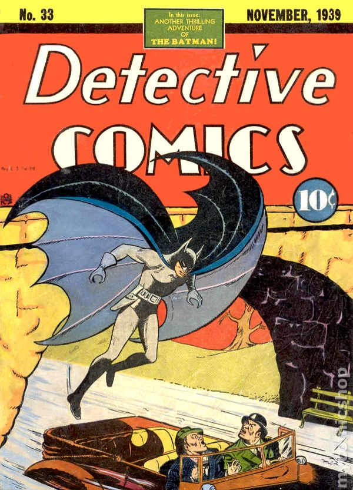
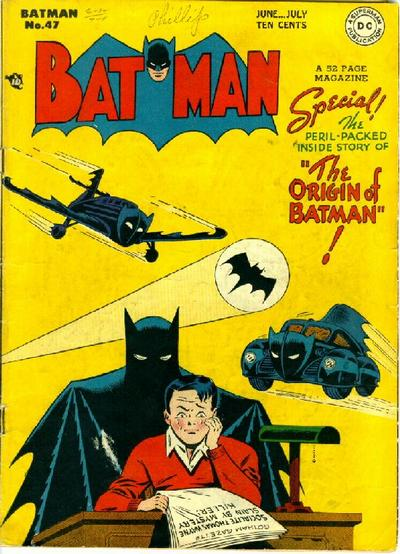

Origin
The central fixed event in the Batman stories is the character's origin story.As a young boy, Bruce Wayne was horrified and traumatized when he watched his parents, the physician Dr. Thomas Wayne and his wife Martha, murdered by a mugger with a gun. Batman refuses to utilize any sort of gun on the principle that a gun was used to murder his parents. This event drove him to train his body to physical perfection and fight crime in Gotham City as Batman. Pearson and Uricchio also noted beyond the origin story and such events as the introduction of Robin, "Until recently, the fixed and accruing and hence, canonized, events have been few in number",[70] a situation altered by an increased effort by later Batman editors such as Dennis O'Neil to ensure consistency and continuity between stories.

In Batman's first appearance in Detective Comics #27, he is already operating as a crime-fighter.Batman's origin is first presented in Detective Comics #33 (November 1939) and is later expanded upon in Batman #47.

More about Batman biography